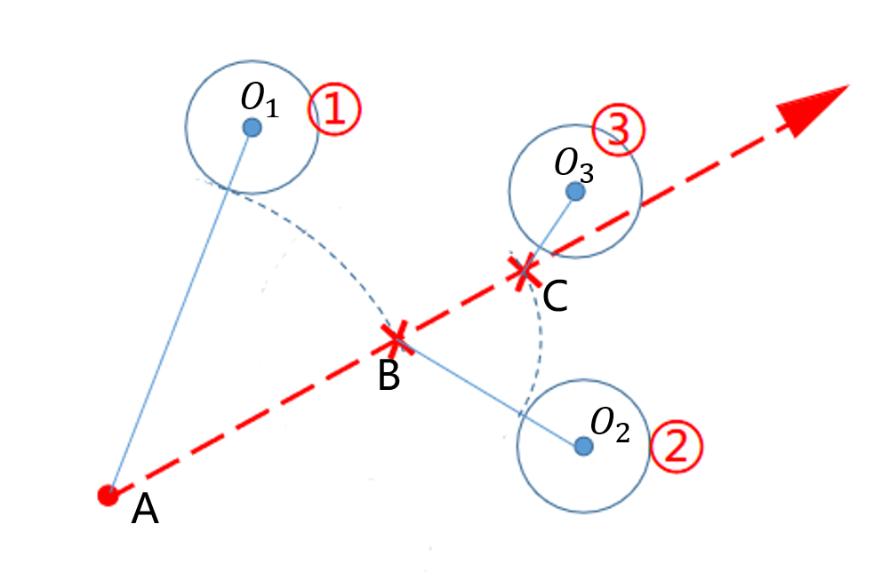

鼠标拾取物体概览
本程序主要应用射线法进行点和物体的拾取。
鼠标点击屏幕后，获取世界坐标系下摄像机位置，计算摄像机在点击方向上发出的射线的单位向量。
将射线和摄像机位置投影到每一个物体的模型坐标系下，获取模型坐标系下射线捕获的点。将所有捕获的点，变换到世界坐标系下，比较点到摄像机的距离，取最小距离对应的点为拾取点。
最后根据拾取点，索引到所在物体。
此步骤是程序较为重要的一步，是交互界面中的基础步骤，为后续的改变物体属性、姿态、位置、大小和物体的标记等操作提供条件。
鼠标拾取物体原理
计算射线单位向量
首先获取屏幕坐标的归一化坐标ndc,而后将ndc转化到相机坐标系，则相机坐标系下，射线的方向向量即为所求向量的归一化，公式如下:
\[ \text{ray_camera} = normalize(\text{MAT_PERSPECTIVE}^{-1}*\text{ndc}-(0,0,0,0)^{T}) \]
widget.cpp:
glm::vec3 Widget::get_ray(int mousex, int mousey, int screenWidth, int screenHeight, glm::mat4 matModel, glm::vec4& init_point) {
glm::vec4 ndc((float)mousex * 2 / (float)screenWidth - 1, (float)mousey * 2 / (float)screenHeight - 1, 1.0f, 1.0f);
glm::vec4 pointView = glm::inverse(projection) * ndc;
pointView.y *= -1;
pointView /= pointView.w;
glm::vec4 rayView = pointView - glm::vec4(0, 0, 0, 1);
init_point = matModel * glm::inverse(view) * glm::vec4(0, 0, 0, 1);
glm::vec4 ray = glm::normalize(matModel * glm::inverse(view) * rayView);
return glm::vec3(ray.x, ray.y, ray.z);
}
在每个模型中拾取点
将射线和相机坐标转化到模型系下:
\[ \text{ray_model} = \text{MAT_MODEL}^{-1}* \text{MAT_VIEW}^{-1} * \text{ray_camera} \\\ \text{campos_model} = \text{MAT_MODEL}^{-1} *\text{campos_world} \]
射线步进法
根据摄像机位置和射线拾取点时，用到射线步进法，主要步骤见下图：

设初始搜索点为 \(A\)，搜索到模型距离其最近的点为 \(O_1\) ，判断 \(O_1\)点到射线的距离是否小于阈值，不满足则将搜索点沿着射线方向移动 \(O_1A-r_1\)的距离到搜索点 \(B\)。
重复上述过程，搜索点 \(B\)搜索到模型距离其最近的点为 \(O_2\) ，判断 \(O_2\)点到射线的距离是否小于阈值，不满足则将搜索点沿着射线方向移动 \(O_2B-r_2\)的距离到搜索点 \(C\)。
在 \(C\)处搜索到 \(O_3\)点，计算 \(O_3\)点到射线的距离，发现小于阈值，则确定捕获这一点，将模型指针和这个点的索引值记录
值得注意的是：**如果一直没有搜索到需要的点，则当搜索点射出模型范围，即跳出搜索。
widget.cpp:
while (true) {
float d = glm::l2Norm(glm::cross(glm::vec3(qpoint[0] - search.x, qpoint[1] - search.y, qpoint[2] - search.z), ray));
if ( d < thre) {
getpoints.push_back(obj->localToWorld() * glm::vec4(search.x,search.y,search.z,1));
hitObjects.push_back(obj);
pointIs.push_back(pointI);
break;
}
float deltaDistance = glm::l2Norm(glm::vec3(qpoint[0] - search.x, qpoint[1] - search.y, qpoint[2] - search.z)) - thre;
search += deltaDistance * ray;
assert(glm::l2Norm(search) < 1e10);
if (sqrt(pow(init_point.x - search.x, 2) + pow(init_point.y - search.y, 2) + pow(init_point.z - search.z, 2)) > maxthre)
break;
pointI = pointcloud->nearestSearch({ search.x,search.y, search.z });
qpoint = pointcloud->getVertex(pointI).position();
}
选出最优点
将记录的每个点都转换到世界坐标系下，计算世界坐标系中各个选中点到摄像机的距离，取距离最小的点为最终选择点，该点所在的模型为最终选择的模型
 1.8.11
1.8.11